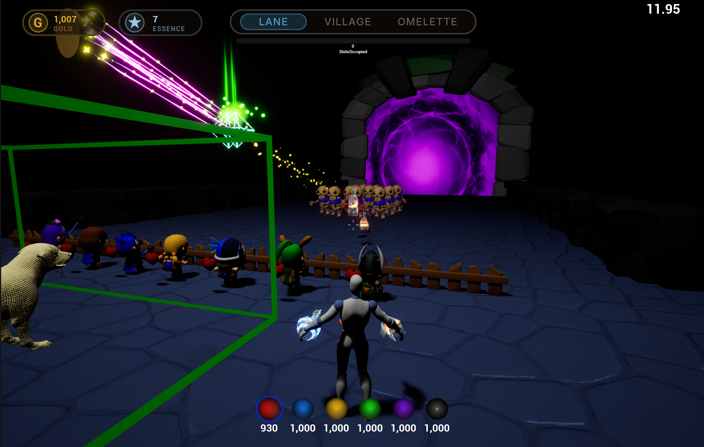
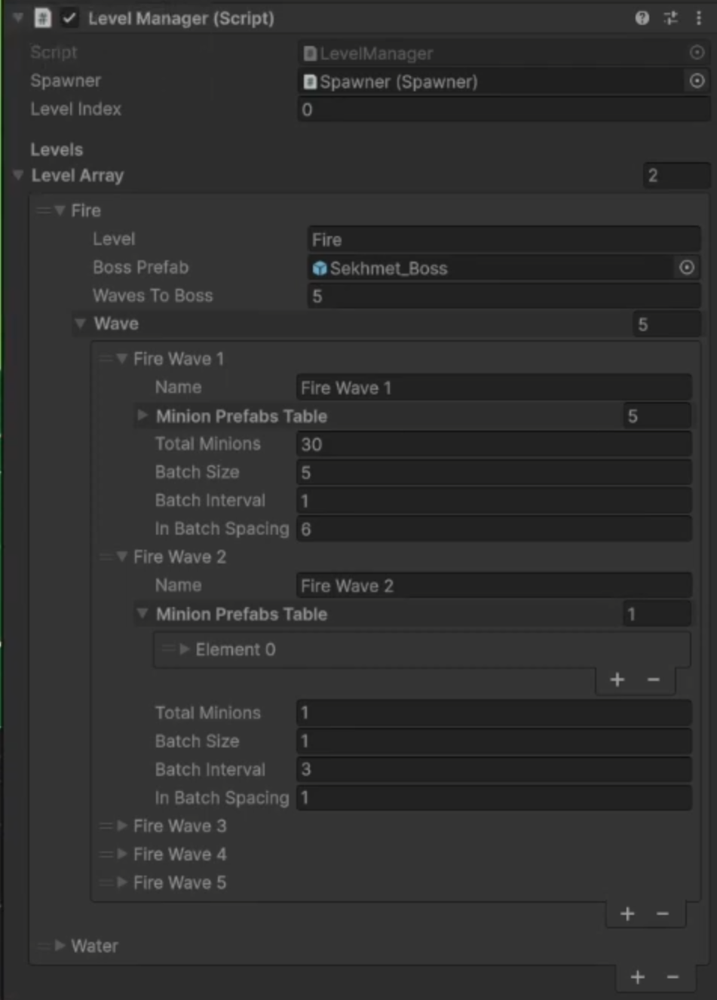

Reusing enemies instead of creating and destroying them.

Alchemist TD gameplay. I spam potions into waves of enemies. This no longer causes an ERROR_ACCESS VIOLATION, as enemy spawning is handled by object pooling
Principle
Create every enemy once when the level loads, then reuse them.
Problem
Killing enemies really fast caused an access violation.
Fix
Pre-spawn a pool of monsters that are hidden and switched off (disable tick, mesh, and collision components). Activate one when needed; return it to the pool on death instead of destroying it, which let me remove the looping timer entirely.
Key lesson
Understand the lifetime of your functions, timers, and objects. A timer that acts on an object that's already been destroyed will crash.
01 · CRASH: EXCEPTION_ACCESS_VIOLATION
Under stress (spamming potions into a dense crowd so enemies died rapidly) the game crashed:
EXCEPTION_ACCESS_VIOLATION writing address 0x0000000000000550 in AWaveManager::SpawnBatch lambda, while clearing the batch list
The cause was a dangling pointer. The spawn timer's lambda held raw pointers to the enemies (and to the spawner itself). When an enemy was destroyed before the timer next fired, that pointer was left pointing at memory that had already been freed, so the timer reached for something that no longer existed. The tiny near-zero address is the fingerprint of exactly that.
My first fix was trying to switch the enemy references to TWeakObjectPtr (which invalidates automatically when the object is destroyed) and added IsValid guards. That stopped the crash, but it was still guarding against a dangerous situation rather than removing it.
1 · DiagnoseUnderstand the error
The enemy was a pointer. I destroyed it, so the pointer now points at nothing. That's the access violation.
2 · GuardPatch it safely
Found UE5's smart-pointer types. Used TWeakObjectPtr and IsValid guards so a dead pointer can't be used.
3 · EliminateRe-architect
Switched to object pooling. No runtime destroy, no looping timer, so the crash can't happen at all.
How I got there: diagnose the pointer, guard it, then remove the situation entirely.
02 · REDESIGNING SPAWN ARCHITECTURE
before allocate every spawn
WaveManager.cpp
// fresh actor created every spawn,// destroyed on death.void AWaveManager::SpawnSingleEnemy(...)
{
AEnemyBase* Enemy =
GetWorld()->SpawnActor<AEnemyBase>(
EnemyClass, Loc, Rot, Params);
// ^ heap alloc, every spawn
}
// On death:
Destroy(); // timer may still// reach for it
after reuse from a pool
WaveManager.cpp
// existing actor checked out of a// pre-filled pool. no alloc.void AWaveManager::SpawnSingleEnemy(...)
{
AEnemyBase* Enemy =
EnemyPool->GetFromPool(EnemyType);
if (!Enemy) { /* exhausted */ }
Enemy->SetActorLocationAndRotation(...);
}
// On death:
EnemyPool->ReturnToPool(this);
// reset, no destroy
commit bd20f4e · “implement object pooling: replace SpawnActor with pre-spawned enemy pool” · 9 May 2026
The pool itself is a map from each enemy type to an array of reusable enemy instances. The level's enemy types and quantity per enemy to pre-spawn are set in the editor by the designer via the UPROPERTY macro, so adding a new enemy type or level is a simple editor change, not a code change.
EnemyPoolComponent.h - DECLARATION
/* UEnemyPoolComponent
* Owns all pre-spawned enemy actors for the level.
* One array per enemy type; all spawned once at load, then reused. */private:
// map: enemy type → reusable instancesTMap<EEnemyType, TArray<TObjectPtr<AEnemyBase>>> Pool;
public:
void InitializePool(); // pre-spawn everything at loadAEnemyBase* GetFromPool(EEnemyType Type); // check out a free instancevoid ReturnToPool(AEnemyBase* Enemy); // reset + hand back on death
AEnemyBase* UEnemyPoolComponent::GetFromPool(EEnemyType EnemyType)
{
TArray<TObjectPtr<AEnemyBase>>* TypePool = Pool.Find(EnemyType);
if (!TypePool)
{
// no pool for this type · was InitializePool called?returnnullptr;
}
// walk this type's array by reference; return first free instancefor (TObjectPtr<AEnemyBase>& EnemyPtr : *TypePool)
{
if (!IsValid(EnemyPtr)) continue; // skip invalidif (EnemyPtr->bIsInUse) continue; // skip ones already alive
Activate(EnemyPtr);
return EnemyPtr; // hand back the real reference
}
// nothing free · pool sized too small for this wavereturnnullptr;
}
Whilst writing this post, I was brainstorming the edge cases and limits of this architecture and one limit I thought of was that my GetFromPool() function searches a usable enemy instance via a walk.
At this stage, I have only 3 enemy types and a hundred of them each per type. However, I need to consider later stages of the game when there are tens of enemy types with thousands of enemies. If a large mixed group of enemies die in the same tick, then in that single frame the game would be scanning from the start of each type's array looking for a free slot.
The more enemies and bigger the pools the longer that takes. A solution could potentially be keeping a separate list of enemies that are currently free. This means that accessing that list, the first index would always give me an enemy.
Alchemist TD: When the objective (teddy in img) is dropped on the ground. The closest enemy rushes to capture it.
Principle
Filter down to a small set first, then perform calculations.
Problem
When the objective is dropped, one enemy needs to retrieve it. I needed the closest enemy to a point, without measuring every enemy in the level.
Fix
Spawn a collision sphere at the point and get back only the enemies overlapping it. Then iterate that smaller set, building a vector from each enemy to the centre to measure distance, and keep the closest.
Key lesson
Cut down on how much you search. A cheap filter (the radius query) means the costly step (measuring distance) only runs on a handful of candidates, not the whole level. I avoided GetAllActorsOfClass, which would iterate every actor in the level. The overlap sphere gives me only the nearby enemies, so I'm never scanning the whole world.
// Returns the closest living enemy within Radius of Location.AEnemyBase* APhaseManager::FindClosestEnemy(FVector Location, float Radius,
AActor* ActorToIgnore) const
{
// 1 · ask the physics system for only the enemies inside the sphere.TArray<FOverlapResult> OverlapResults;
FCollisionQueryParams QueryParams;
if (ActorToIgnore) QueryParams.AddIgnoredActor(ActorToIgnore);
GetWorld()->OverlapMultiByChannel(
OverlapResults, Location, FQuat::Identity,
ECC_GameTraceChannel2, // the "Enemy" channel onlyFCollisionShape::MakeSphere(Radius), QueryParams);
// 2 · scan the survivors, keep the closest one.// FLT_MAX = "nothing found yet", so the first real enemy always wins.AEnemyBase* ClosestEnemy = nullptr;
float ClosestDistance = FLT_MAX;
for (constFOverlapResult& Result : OverlapResults)
{
AEnemyBase* Enemy = Cast<AEnemyBase>(Result.GetActor());
if (!IsValid(Enemy)) continue; // skip non-enemies / invalidif (Enemy->bIsDead) continue;
float Distance = FVector::Dist(Enemy->GetActorLocation(), Location);
if (Distance < ClosestDistance)
{
ClosestDistance = Distance;
ClosestEnemy = Enemy;
}
}
return ClosestEnemy;
}
REFLECTION
Overlap and Hit are different in Unreal, and I had to be deliberate about which I used. A Hit fires when two things physically block each other and stop like a projectile striking a wall. An Overlap fires when they pass through each other and the engine just reports the contact like walking through a trigger zone. Here I only want to detect which enemies are inside the sphere, not stop or block them, so an overlap query is the right choice, a hit would imply the sphere is a solid barrier, which it isn't.
NOTE-01 · RMIT PROJECTMAY 9 2026 · Thanks Carl · Structs · GROUP · UNITY · C##Structs #DataDriven #Unity #TeamWork
ThanksCarl Development Highlights
Virtual Reality - Tower Defense Crafting Potions
This was a group project: an RMIT team game built with the lead developer M.W. with three other team members. My contributions were the enemy spawning, the enemy movement, and the waves and levels system
01 · DROP TABLE (LOOT CHANCE) LOGIC ABSTRACTION FOR SPAWNING MONSTERS
M.W had built a random drop table for crafting ingredients. I realised the same idea worked for enemies: if it can randomly pick from a table of ingredients and produce one, I could swap the objects for monsters and get a randomised wave composition, so every playthrough gives a different mix of enemies, and the player can't lean on one repeated strategy.
I repurposed it into RunMinionDropTable(), spawning monsters into a spawn area at the end of the combat zone, then pushing each one toward a target at the cauldron.
Spawner.cs · the weighted picker (my contribution)
// NEW PICKER WITH WEIGHTING// swap ingredient logic for a monster drop table, so each// wave's composition is randomised per playthroughvar monsterPrefab = RunMinionDropTable(wave.minionPrefabsTable);
GameObject m = Instantiate(monsterPrefab, spawnPosition, Quaternion.identity);
// hand the spawned monster its movement target (the cauldron)EnemyMovement em = m.GetComponent<EnemyMovement>();
em.endzoneTrigger = endZoneVolume;
em.endLookTarget = endLookTarget;
02 · STRUCTS WITHIN STRUCTS
The waves-and-levels system was the part I'm proudest of from this project, because I was able to create an inspector tool so my teammates could easily edit waves and test the game. A struct lets you define the shape of a wave once, then fill in many of them from the Unity inspector without touching code. A level became an array of waves; each wave carried its own count, batch size, timing, and enemy table.
LevelManager.cs · the wave/level structs (my contribution)
[Serializable] // Wave config · editable in the inspectorpublic structWaveConfig
{
public string name;
publicMinions[] minionPrefabsTable; // which monsters can appearpublic int totalMinions; // how many in this wavepublic int batchSize; // how many spawn at oncepublic float batchInterval; // time between batchespublic float inBatchSpacing; // spacing within a batch
}
[Serializable] // Level config · an array of waves + a bosspublic structLevelConfig
{
public string level;
publicGameObject bossPrefab;
public int wavesToBoss;
publicWaveConfig[] wave; // many waves per level
}

In the inspector, designers can simply edit waves and levels. As a level is an array of structures including waves, bosses and level environments. A wave is a structure made up of enemies, time and a table of monsters and spawn chances.